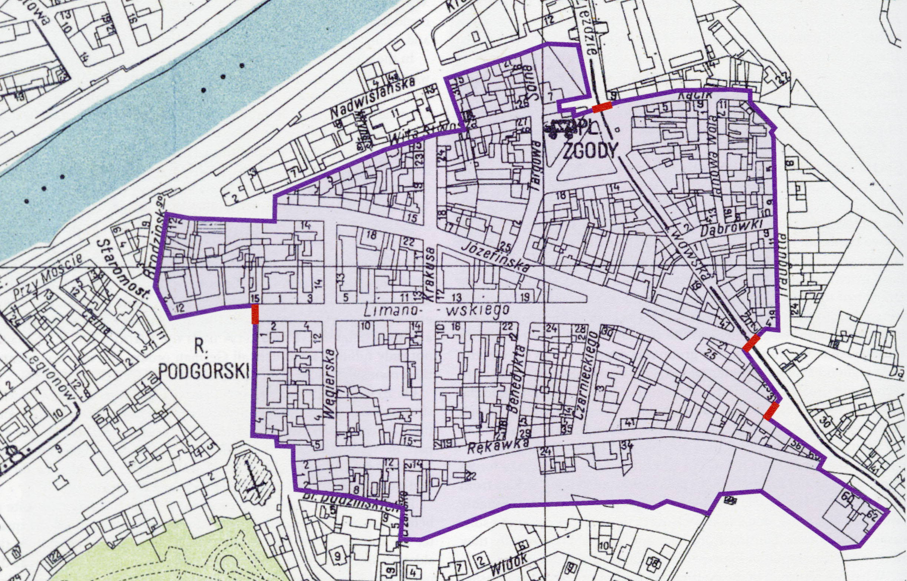

Welcome
It is the memories of homemaking and family life, and the experiences of terror or momentary reprieve that transformed the Kraków Ghetto into a place. This project questions, how can place be visualized in the context of its space? The slippery nature of capturing moments of place making challenges the boundaries of what is possible in visualization and mapping. I can take the work of close listening to testimonies and the wide-scale visualization tools of mapping in the same digital space. Places are the anchoring points where people affix their memories, is it possible capture that? To demand that of a space that no longer exists?

Map of the ghetto showing walls and gate locations.
Source: Chart in the collection of the Historical Museum of the City of Kraków as cited in Monika Bednarek, ed., Kraków under Nazi Occupation: 1939-1945. Kraków: Muzeum Historyczne Miasta Krakówa, 2011.
Source: Chart in the collection of the Historical Museum of the City of Kraków as cited in Monika Bednarek, ed., Kraków under Nazi Occupation: 1939-1945. Kraków: Muzeum Historyczne Miasta Krakówa, 2011.